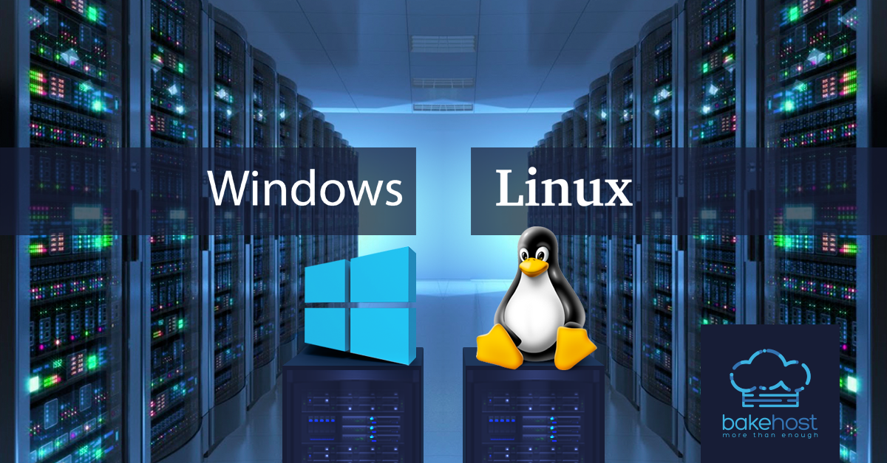

Serveur OpenVPN & Réseau Distant Sécurisé
Contexte : Modéliser un accès à distance sécurisé pour des collaborateurs nomades devant accéder au réseau interne sans exposer les services au web public.
Réalisation : Déploiement d'un serveur OpenVPN sous Linux, génération d'une autorité de certification (CA), création de certificats clients chiffrés et routage des flux de données.
OpenVPN
Linux Debian
PKI / TLS
IPTables